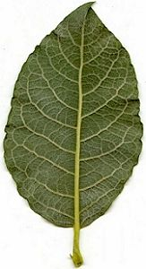

|
| Woher kommt der Name Salweide?
 | Sal ist ein sehr altes Wort für schmutziggrau.
Die Salweide heißt so, weil ihre Blätter auf der Unterseite grau behaart sind.
Weide kommt von einem alten Wort für biegen oder binden. Weiden sind also nach ihren biegsamen Zweigen benannt.
Auf Englisch heißt die Salweide
Goat Willow (Ziegenweide).
|